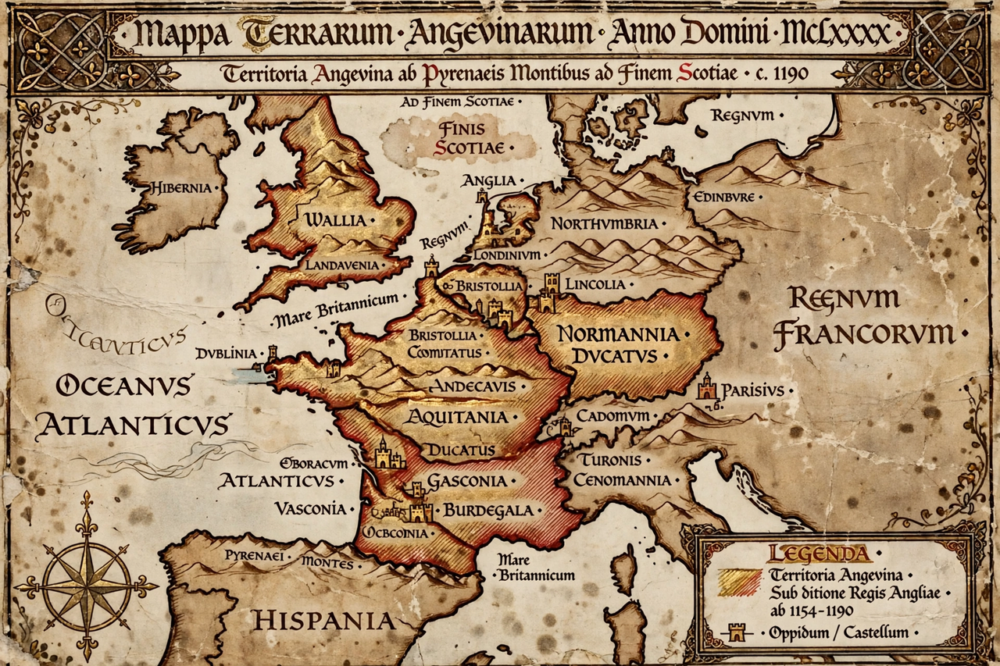

Angevin Empire

| Angevin Empire | |
|---|---|
| Period | 1154 – 1214 (to 1242 in part) |
| Rulers | Henry II, Richard I, John |
| Territories | Kingdom of England; Anjou, Normandy, Maine, Brittany, Aquitaine and other French fiefs |
| Ended by | Philip II of France; Battle of Bouvines (1214) |
The Angevin Empire (French: Empire Plantagenêt) is the modern historiographical term for the collection of states ruled by the Angevin kings of England in the 12th and early 13th centuries. Its rulers were Henry II, Richard I and John. At its height the empire stretched from the Pyrenees to Ireland and the Scottish border, encompassing the Kingdom of England and roughly half of medieval France — though it was never a single unified state, but a patchwork of kingdoms, duchies and counties held by one dynasty.
Origins
The empire was assembled by inheritance and marriage. Henry II inherited Anjou, Maine and Touraine from his father Geoffrey Plantagenet, claimed England and Normandy through his mother the Empress Matilda, and in 1152 married Eleanor of Aquitaine, adding the vast Duchy of Aquitaine. Crowned king of England in 1154 after the Anarchy, he also asserted control over Brittany and campaigned in Ireland and Scotland.
Decline and fall
The empire's composite nature made it fragile. Henry's sons rebelled repeatedly, aided by the kings of France; the murder of Thomas Becket in 1170 damaged Henry's prestige. Richard I spent much of his reign on the Third Crusade and defending his lands against Philip II Augustus. Under John, Philip conquered Normandy, Anjou and Maine in 1203–1204. John's attempt to recover them ended in the disastrous Battle of Bouvines in 1214, after which the English crown retained only Gascony in the south-west of France — a remnant that would help fuel the Hundred Years' War.
See also: Plantagenet · Duchy of Normandy · Capetian dynasty